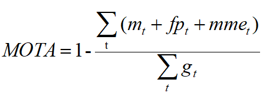

4 · Scripts
The evaluation scripts are released on github here.
5 · Evaluation
Once you want to test your method on the test set, please run your approach on the provided test dataset and submit your results to our Challenge.
We have labeled five types of instances in our dataset: 1 for small vehicles, 2 for big vehicles, 3 for pedestrian, 4 for bicyclist and 5 for others. However, we consider the first two types as one type (vehicles) in this challenge. We do evaluation just for vehicles, pedestrian and bicyclist.
6 · Metric formula
Follow the CLEARMOT [1], we use the multiple object tracking accuracy (MOTA) as the evaluation criterion.

Where  ,
,
 ,
,
 ,
and
,
and
 are are the number of misses, of false positives, of mismatches, and of objects present respectively, for time
are are the number of misses, of false positives, of mismatches, and of objects present respectively, for time
 .
.
For object
 and tracker hypothese
and tracker hypothese
 ,
we use the intersection-over-union (
IoU
) threshold to define the mismatch.
,
we use the intersection-over-union (
IoU
) threshold to define the mismatch.
where
 and
and
 are the corresponding 3D bounding boxes for
and
.
We set IoU threshold as 0.5. If IoU(
,
) is less than 0.5, we think the tracker has missed the object.
are the corresponding 3D bounding boxes for
and
.
We set IoU threshold as 0.5. If IoU(
,
) is less than 0.5, we think the tracker has missed the object.
7 · Rules of ranking
Result benchmark will be:
| Rank | Method | Mean MOTA | Vehicles | Pedestrians | Bicyclists | Team Name |
|---|---|---|---|---|---|---|
| xxx | xx | xx | xx | xx | xx | xx |
Our ranking will determined by the mean MOTA of all types of objects.
8 · Format of submission file
Example dir tree of submitted zip file:
Example dir tree of submitted result file:
9 · Publication
|
Please cite our paper in your publications if our dataset is used in your research. TrafficPredict: Trajectory Prediction for Heterogeneous Traffic-Agents [PDF]
|
10 · Reference
[1] K. Bernardin, R. Stiefelhagen: Evaluating Multiple Object Tracking Performance: The CLEAR MOT Metrics. JIVP 2008.